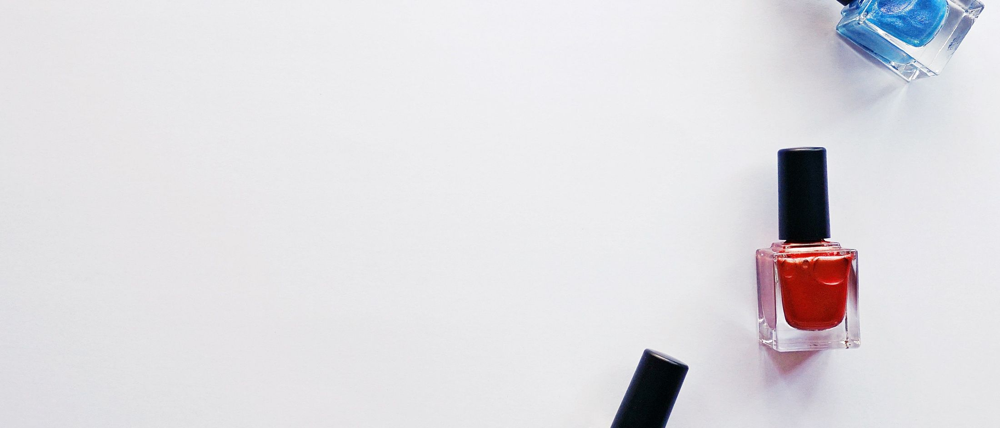
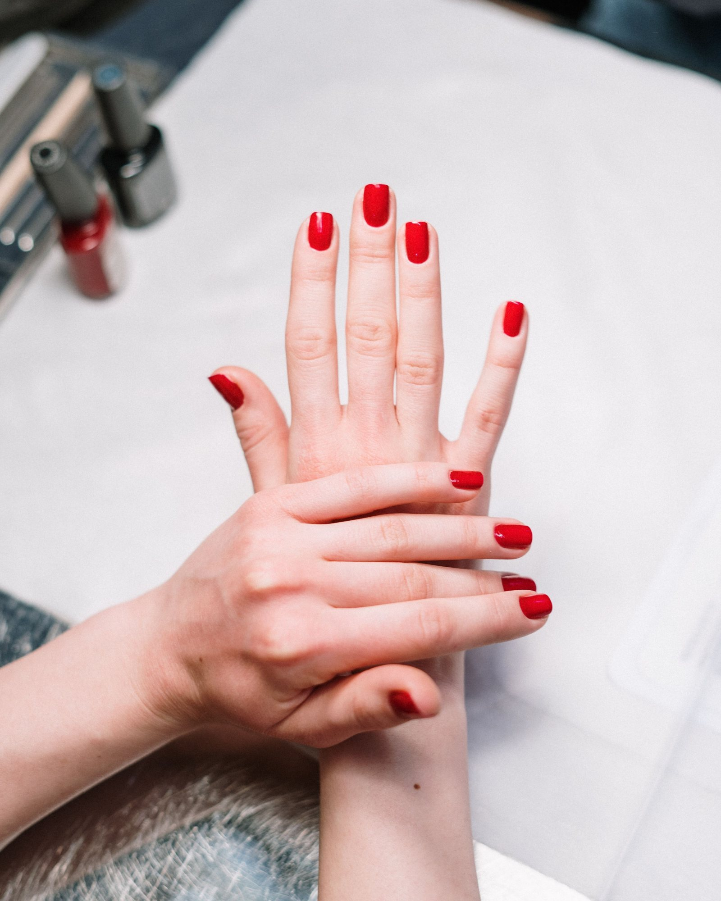
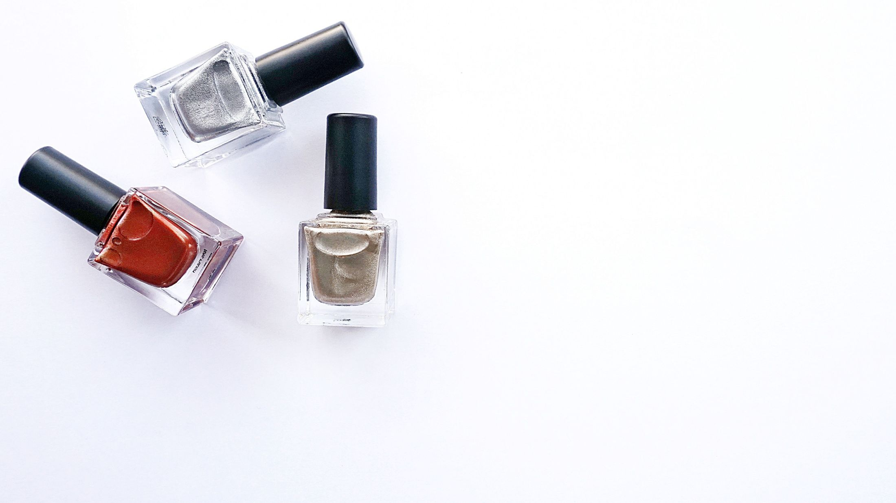
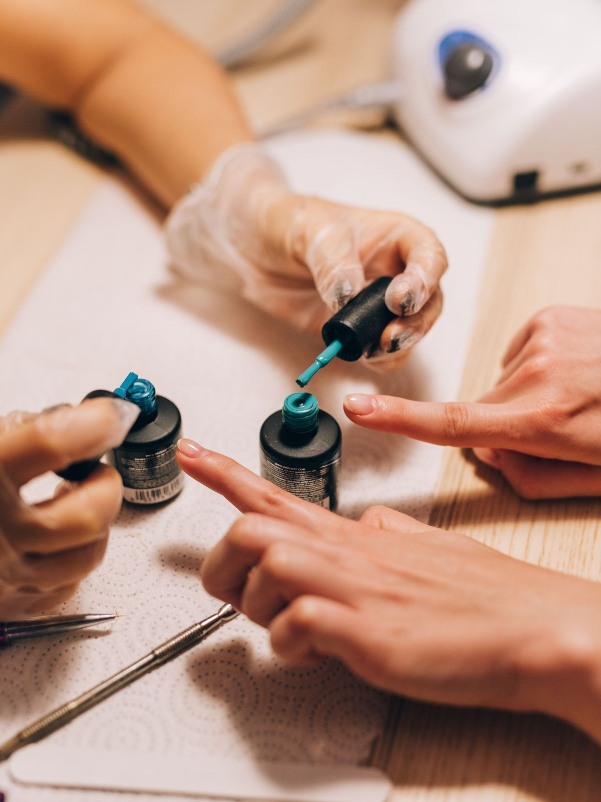
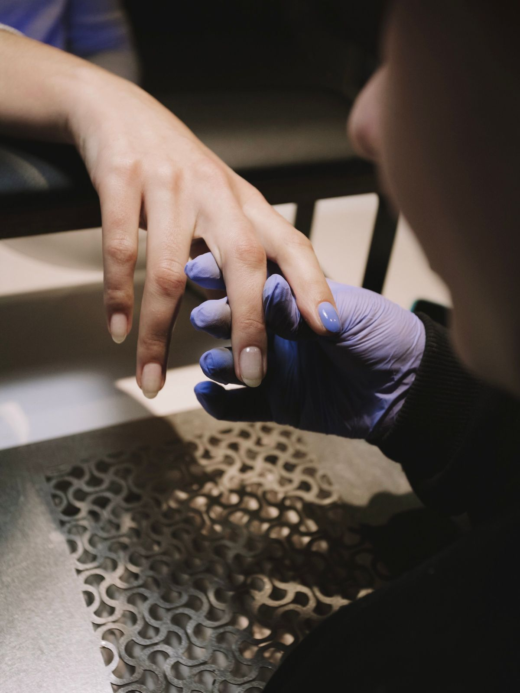
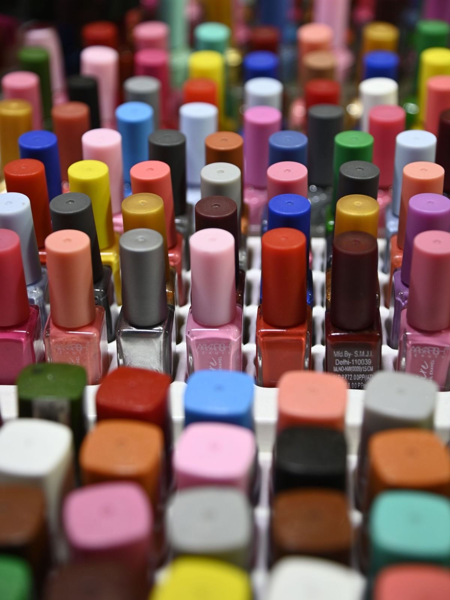
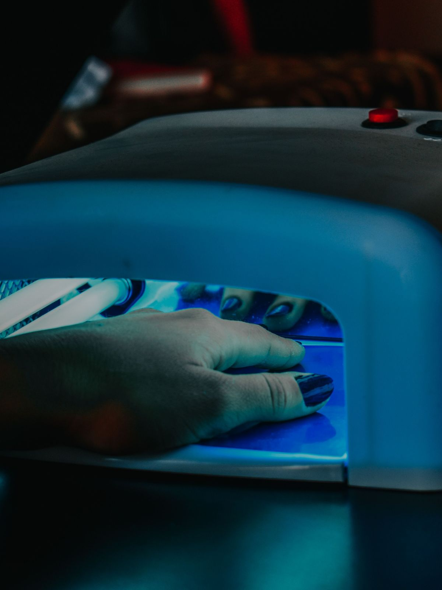

Caracol Ñuñoa · local 10B
Av. Pedro de Valdivia 3462, Ñuñoa
Reserva por Setmore
Ver su agendaÑuñoa · tres locales
Forma, largo y color se deciden en dos minutos y se llega con la idea lista. Acá están las tres cosas que hay que elegir, y en cuál de los tres locales queda la hora.
Elegir ahora Ver dónde reservar

11.000
seguidores en Instagram el 11-09-2026, con casi dos mil publicaciones. Ese público ya existe
3
sistemas de reserva distintos funcionando a la vez: Fresha, AgendaPro y Setmore
3
locales, dos en el Caracol y uno en Irarrázaval, y ninguna página los muestra juntos
0
dominios propios. Su Instagram se llama «dchamas.cl» y ese dominio está libre
La pregunta de la silla
Tres decisiones y ya está: la forma, el largo y el color. Elíjalas acá, mire cómo queda, y llegue con la idea hecha en vez de decidirla con la mano ya en remojo.
01 La forma
02 El largo
03 El color
Cinco de ejemplo; la carta completa está en el local
Dibujo nuestro para elegir. No es una foto de un trabajo del salón.
Elegir acá no reserva nada: es para llegar con la idea clara. La hora se pide en la agenda del local que le quede más cerca, y las tres están más abajo. No hay precios: los publica cada agenda y cambian.
Dónde queda cada uno
Los tres son suyos y los tres reservan por sistemas distintos. Esta es la única lista donde están juntos: los datos salen de sus propias fichas públicas, leídas el 11-09-2026.
Caracol Ñuñoa · local 10B
Av. Pedro de Valdivia 3462, Ñuñoa
Reserva por Setmore
Ver su agendaCaracol Ñuñoa · local 45A
Av. Pedro de Valdivia 3462, Ñuñoa
Reserva por Setmore
Ver su agendaIrarrázaval · local 5
Av. Irarrázaval 1970, Ñuñoa
Reserva por Fresha y AgendaPro
Ver su agendaEl horario sale de sus fichas de Fresha, escritas por ellos mismos. Lo que no pudimos confirmar es qué teléfono corresponde a qué local: Fresha publica un número distinto del que aparece en su ficha de Google, y no vamos a adivinar cuál va en cuál.
Lo otro que hacen
No es sólo manos y pies. Esto es lo que toma cada cosa, para calzar la hora con el resto del día.
Los servicios son los que ellos publican en sus agendas; las duraciones las pusimos nosotros como referencia del oficio y van marcadas con línea punteada. Sin precios.

Once mil siguiendo
Once mil personas siguen su Instagram y casi dos mil publicaciones muestran el trabajo. Lo que no hay es un lugar propio adonde mandarlas: hoy el enlace de la biografía tiene que elegir entre tres agendas, y la que no corresponde manda a la clienta al local equivocado.
Quién atiende · en qué local
Quién atiende · en qué local
Quién atiende · en qué local
No inventamos nombres ni ponemos retratos de banco: los huecos quedan marcados para que se vea qué falta.

«Su Instagram se llama dchamas.cl.
Ese dominio está libre y cuesta lo que una manicure.»
Lo que pasa hoy
Los tres funcionan y conviene dejarlos: ahí están las horas de verdad. Lo que falta es lo de arriba —una página con su nombre que reciba a los once mil y los mande a la agenda del local correcto—. Esta página no reemplaza ninguna de las tres: las ordena.




Estas fotos son de bancos de uso libre y no son de Dchamas. Están para que se vea de qué habla la página. Las de verdad las tienen ellos: casi dos mil publicaciones de trabajos terminados están en su Instagram.
Escribir
Con la forma, el largo y el color elegidos alcanza. El número es el de su ficha de Google y es celular, así que recibe WhatsApp.
@dchamas.cl — 11.000 seguidores

Para el dueño
Una propuesta de sitio web hecha por nuestra cuenta. Dchamas no la encargó ni la ha revisado. Las tres direcciones, el horario y los servicios los leímos el 11-09-2026 en sus propias fichas públicas de Fresha, Setmore y AgendaPro.
Su cuenta de Instagram se llama dchamas.cl. Probamos ese dominio y no está registrado: NIC Chile responde que no existe. O sea, el nombre que ya usan todos los días está libre y cuesta menos que una hora de trabajo.
Los cinco colores de la carta y las duraciones de cada servicio. Van con línea punteada. No hay precios a propósito, y no pusimos qué teléfono va en qué local porque los dos que encontramos no coinciden y preferimos preguntarlo antes que inventarlo.